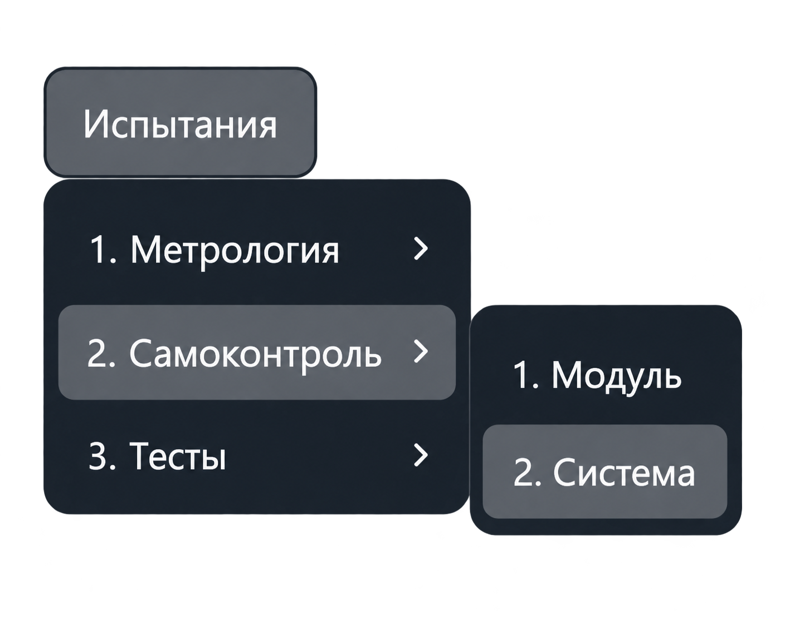
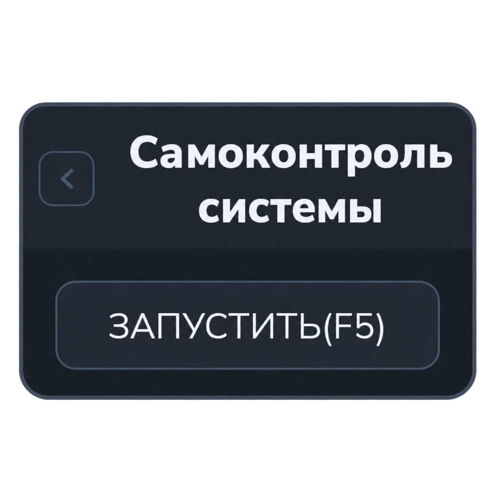

Самоконтроль системы
Последовательно проверяет оборудование системы без ручного выбора каждого устройства. Откройте «Испытания → Самоконтроль → Самоконтроль системы».


Порядок работы
- Откройте вкладку «Самоконтроль системы».
- Нажмите «Запустить» или F5 в активной вкладке.
- Следите за ходом проверки в протоколе и выполняйте запросы приложения.
- После завершения просмотрите результаты и сообщения об ошибках.
Что проверяется
Оборудование выбирается автоматически для первого шасси в конфигурации. Проверки выполняются в следующем порядке:
- Устройство коммутации шин (УКШ).
- Модули коммутации реле (МКР) этого шасси.
- Мультиметр.
- Пробойная установка.
Для выполнения необходимы соответствующие устройства в конфигурации системы. Этот сценарий не перебирает автоматически все шасси.
Результаты
В протоколе отображаются этапы самоконтроля и результаты операций с оборудованием. При ошибке определите устройство и этап по сообщению и следуйте запросу приложения.
Открытие вкладки не запускает проверку. Параметры в этой панели вводить не требуется.
Для проверки отдельного устройства используйте «Самоконтроль модуля».